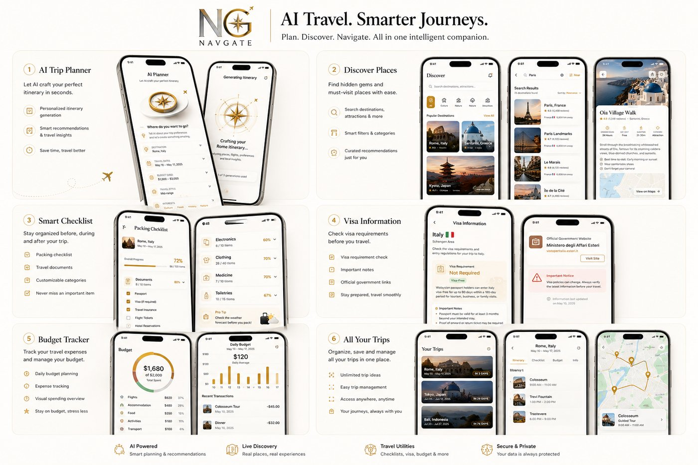

Real Places · AI Planning
Explore 200M+ real places, turn them into an AI-planned itinerary, and get ready to go — all in one app.
Destinations in one tab. The itinerary in another. Visa rules, budget, packing — each living in a different app.
NavGate brings your journey together in one place.
Explore 200M+ real places and find the restaurants, attractions, activities, and landmarks that make a destination worth visiting.
Six ways NavGate replaces the scattered tabs, screenshots, and notes apps most trips end up living in.
Turn your idea into a real itinerary.
Find real places worth building your trip around.
Organize dates, activities, and destinations in one place.
Track what your trip actually costs.
Keep track of everything you need before you go.
Check visa requirements before you travel.

Tell NavGate where you want to go or start exploring destinations.
Add places, activities, budgets, checklists, and everything that matters.
Open your trip and have your journey organized in one place.
Before you go
Your itinerary is just the start. NavGate helps with packing, visa requirements, and your budget — so nothing gets left behind before you go.
Get access through Whop and start planning your next trip.
No complicated setup. Access NavGate and start planning your next journey.